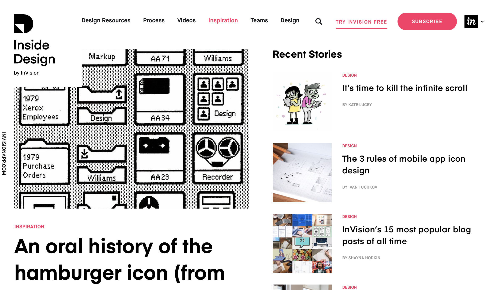

Blog Design Research
By Hai Yu Zhao

One of my favorite blogs is called IdRatherbeWriting. The blog’s owner is a technical writer at Amazon who discusses trends and practices in technical writing, APIs, and information design.
I really like the design of this blog because of its intuitive, simple, and well-organized structure. At the top of the homepage is a header image that tells you the name of the blog and what the blog is all about. Right under the header is exactly what one would expect: a navigation bar with all the major sections of the website as well as a convenient search bar.
The main section of the homepage consists of a feed of the newest blog articles, with a title and a teaser sentence for each entry. This design shows readers that the site is active and constantly has new information being published while enticing the reader to read more into ones that catch their attention.
The design also includes a side bar, which is a nice visual distinction from the main content. The side bar contains ads, recent comments, but most importantly a call to action at the very top encouraging readers to subscribe to the blog. This design highlights the call to action.

Meanwhile, my second favorite blog, the Invision Blog, somewhat inverts the structure of the first blog by having a rolling feed of blog articles on the side bar and a call to action in the top navigation bar. This shows that there is no one right way to layout and design a blog.